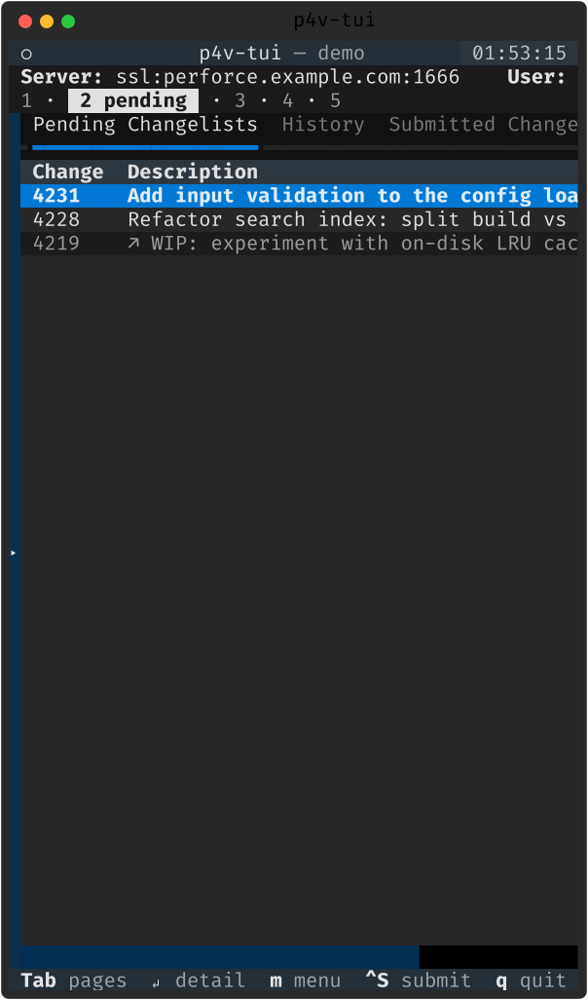

좁은 화면 · 모바일
같은 느린 링크는 대개 작은 원격 화면이기도 합니다. 폰·얇은 분할에서도 legible 하도록.
단일 페이지 내비게이터 ➕
터미널 폭이 100 컬럼 아래로 내려가면 자동으로 단일 페이지 내비게이터로 전환합니다. 한 화면에 한 페이지(트리 → pending → history → submitted → log)를 띄우고 Tab/Shift+Tab 으로 넘깁니다 — Blink 같은 폰 터미널이 Tab 은 보내도 Ctrl+화살표는 안 보내므로, 폰에서 신뢰성 있게 동작합니다.

| 키 | 동작 |
|---|---|
| Tab / Shift+Tab | 다음/이전 페이지 |
| 1–9 | 페이지 바로가기 |
| F3 / Ctrl+W | 트리 ⇄ 마지막 패널 토글 |
| Backspace | 트리(홈)로 |
| Ctrl+→ / Ctrl+← | 데스크톱 별칭 |
폭·높이 적응
- 폭 적응 표 ➕ — 좁으면 Pending/Submitted 를 Change · Description, History 를 Rev · Action · Description 로 줄임.
- 빵부스러기·푸터 — 폰 세로에서 빵부스러기는 숫자만, 푸터는 우선순위 낮은 힌트부터 드롭.
- 짧은 뷰포트 — 45 행 아래면 로그 패널을 자동 접음(F2 로 히스토리 유지).
- 레이아웃 핀 — [narrow] layout = auto|narrow|wide + 런타임 토글 Ctrl+Shift+N. 회전해도 페이지 복원.
한글 IME · CJK
- 두벌식 자모 별칭 ➕ — IME 를 켜도 단축키가 작동(s↔ㄴ, e↔ㄷ, r↔ㄱ, q↔ㅂ …).
- CJK 셀폭 인식 자름 ➕ — 한글 1자 = 2셀을 계산해 표·트리 열이 깨지지 않게 자릅니다.